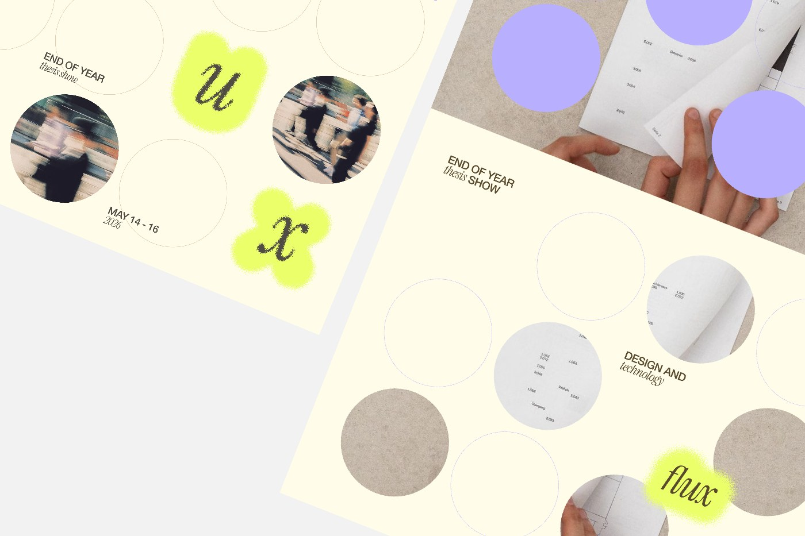
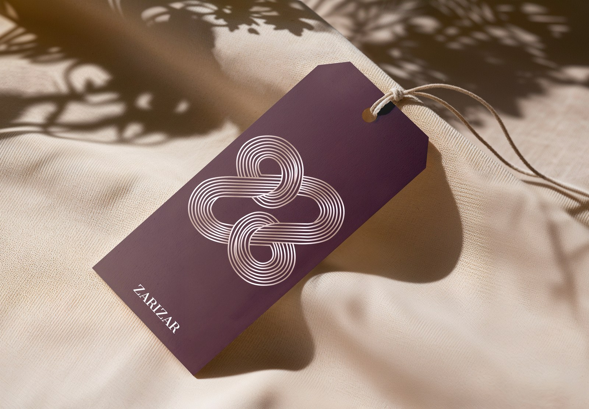
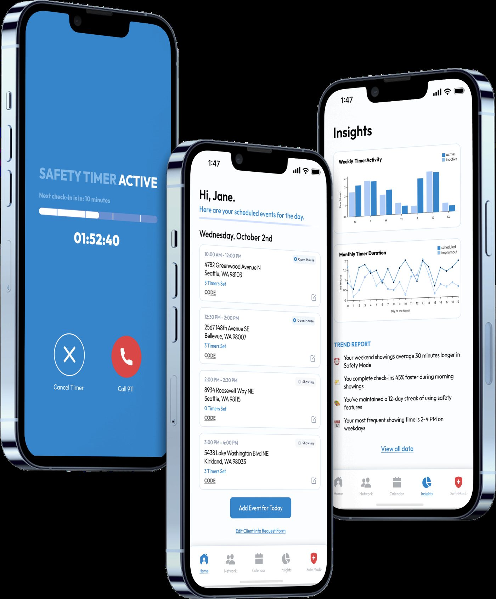
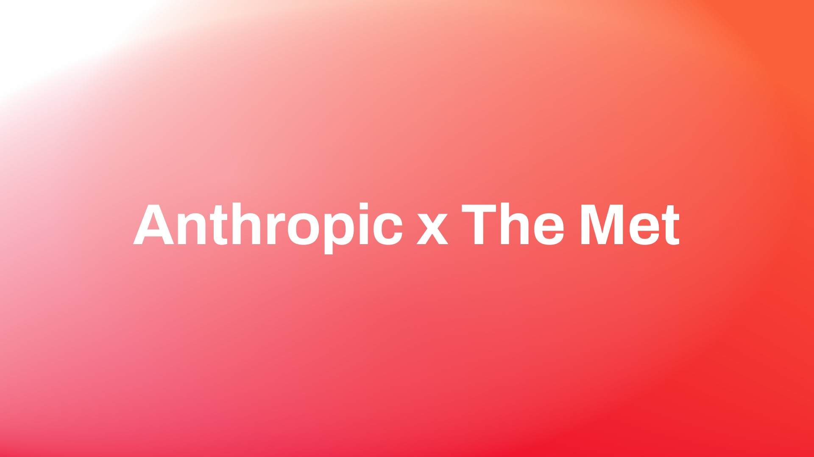
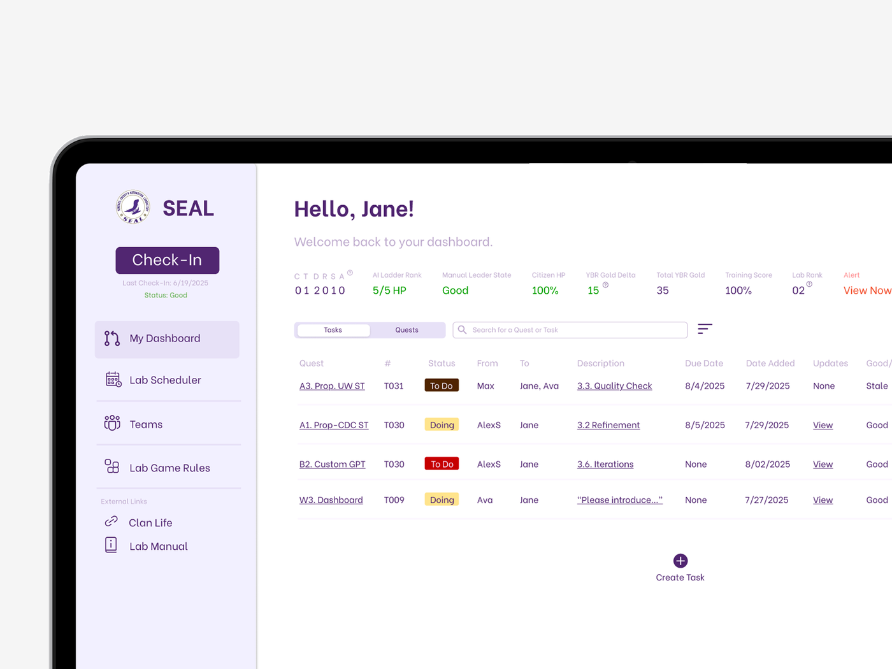
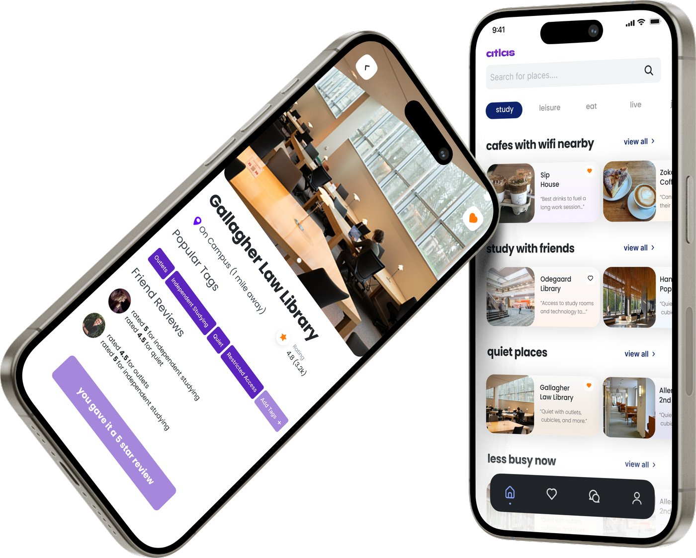

ALL WORK

Flux
Visual Identity0→1Cross-Collaboration
Public thesis website for the Parsons School of Design's Design and Technology program.
Launched for a 200+ attendee showcase, scaled across 170+ pages.

ZariZar
Brand IdentityWeb Design
Brand identity and web design for a luxury Indian shawl company.
Celebrating Deccan craftsmanship and the women who carry it forward.

Arc Security
InternshipCross-Collaboration
Reimagining safety for real estate agents.
Led a team in a hi-fi prototype addressing a fear 33% of real estate agents report.

ContextPath
AIFigma MCP
AI visitor companion for the MET's collab with Anthropic.
Designed a working prototype in a single one-day Anthropic × Met hackathon.

SEAL
InternshipUsability
Internal dashboard for 300+ engineers.
73% faster task completion, 85% improved workflow efficiency, and user satisfaction up 40%.

Among The Trees
AIInteractionLive Website
Investigating the interplay between text and form with AI, using Mary Oliver's When I Am Among The Trees as a canvas for typographic experimentation.
Shipped as a live, interactive typographic experiment.
Through AI's Eyes
InteractionUsability
Teaching AI object recognition principles through an interactive installation in the Museum of Science.
26.7% of tested visitors learned something new about AI.

Atlas
StartupAI Integration
Founding designer at a pre-seed EdTech startup for a campus navigation app connecting users to resources across their community.
Placed top third of 117 teams at the UW Dempsey Startup competition, supporting $56k seed ask.

Watch Out
AIRapid PrototypingAward-Winning
Award-winning AI-generated video for wildlife preservation and fire prevention.
Won the Human + AI Co-Creation Award, made in a one-hour sprint.

For Stillness
ProductVisual Design
Analog interaction design in a digital world.
A solo, hand-bound pop-up book from concept to final print.

Cairn
IoTAIData Viz
Speculative IoT smart home system that builds a digital portrait of a home's emotional climate